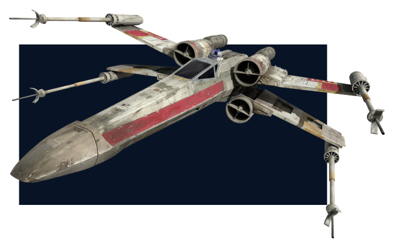
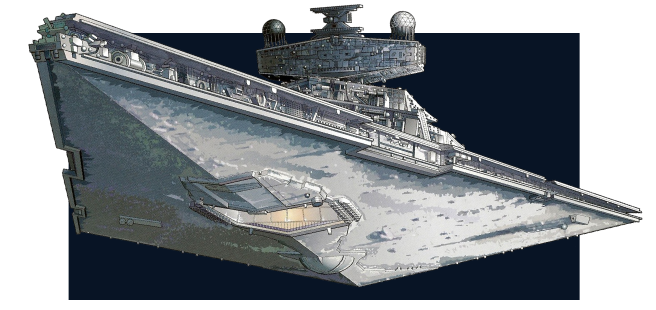
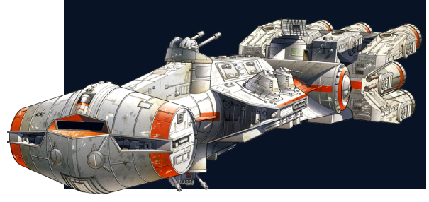

Ao longo dos Tempos Negros, o ex-Anakin Skywalker trouxe medo à galáxia em sua capacidade de executor sombrio do Imperador. No entanto, apesar de sua profunda imersão na escuridão, Vader nunca conseguiu matar completamente o lado dele que era Skywalker. Seu confronto com seu filho, o aspirante a Cavaleiro Jedi Luke Skywalker, durante a Guerra Civil Galáctica despertou a compaixão dentro do Senhor Sith, fazendo com que Vader renunciasse à sua aliança com os Sith para salvar Luke da ira do Imperador.
Naves

X-Wing
Os caças X-wing eram um tipo de caça estelar marcado por seus distintos S-foils que se assemelhavam ao personagem "X" do script High Galactic em formação de ataque. Eles estavam fortemente armados com quatro canhões de laser nos S-foils e lançadores de torpedos de prótons na fuselagem. As asas-X foram projetadas para brigas de cães e missões longas.

Star Destroyer
Os Destroyers Estelares eram as naves que mais consumiam recursos que a galáxia já vira, e apenas Kuat possuía estaleiros capazes de suportar e manter mais do que um punhado de cada vez.

CR-90 Corvette
Enquanto o CR90 veria uso inicial no final da República Galáctica e no Senado Imperial, muitas embarcações seriam apropriadas pela rebelião inicial e pela Aliança Rebelde contra o Primeiro Império Galáctico, apesar de não terem sido projetadas como uma nave voltada para o combate.